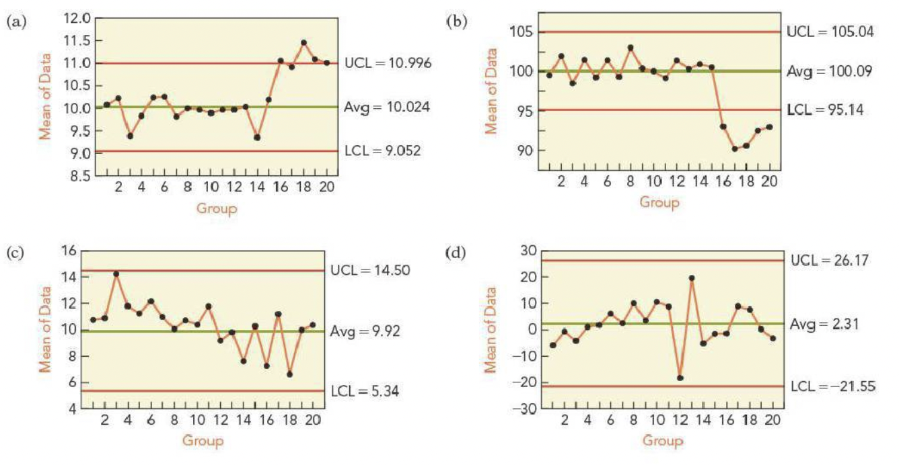
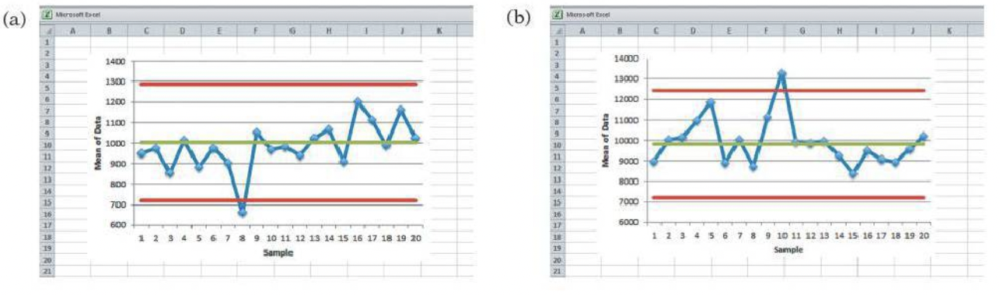
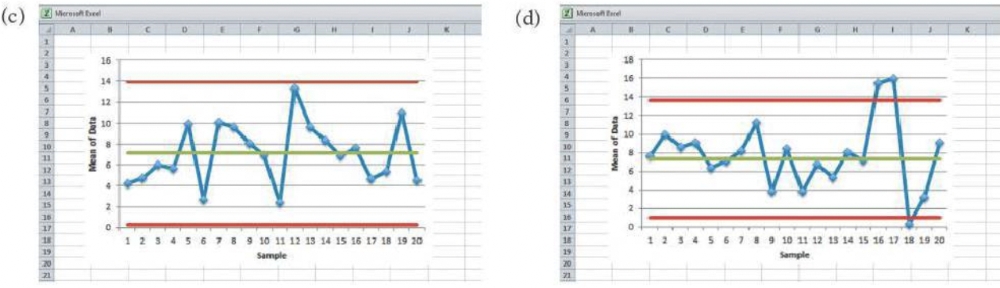
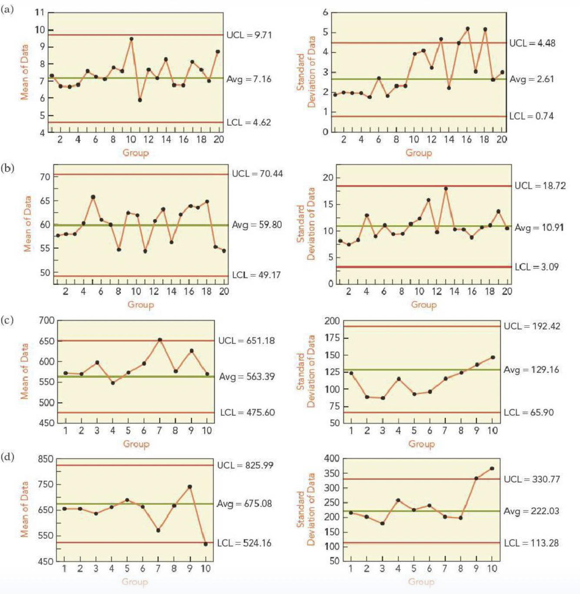
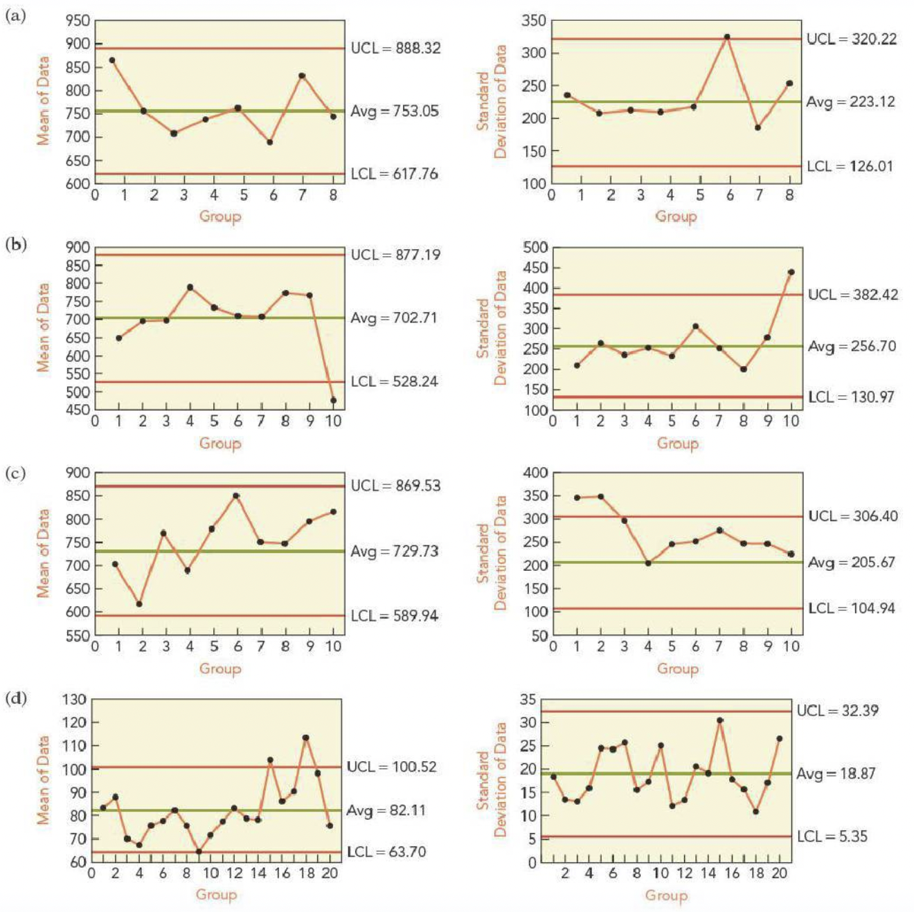

Exam 2 revision
Section A:
|
a. \(E(X - \mu)\) |
|
b. \(10X\) |
|
c. \(\frac{(X-0.04)}{\mu}\) |
|
d. \(X+10\) |
|
e. \(E(X-\mu)^2\) |
|
f. \(\sqrt{VarX}\) |
|
g. \(\mu\) |
|
h. \(p(x)\) |
Please review AE-8, the solutions are on the Canvas page.
Section B:
|
a. \(p(x,y)\) |
|
b. \(\rho\) |
|
c. \(p(x, y) = p(x)p(y)\) |
|
d. \(\rho\sigma_x\sigma_y\) |
|
e. \(Var(X+Y) >Var(X) + Var(Y)\) |
|
f. \(p(x) = p(y)\) |
|
g. \(X_1, X_2, X_3\) |
|
h. \(Var(X+Y) = Var(X) + Var(Y)\) |
|
i. \(S(Y)\) |
|
j. \(3X-2Y\) |
Please review AE-9, the solutions are on the Canvas page.
Section C:
\(Y\) is a binomial random variable with parameters \(n\) and $p$, \(X\) is a Poisson random variable with parameter \(\lambda\) and \(B_1\) and \(B_2\) are Bernoulli trials with probability of success \(p\).
| 1. Expresssion for the variance of \(Y\) | a. \(np\) |
|---|---|
|
b. \(e^{-\lambda}\) |
|
c. \(e^{-\lambda} \frac{\lambda^2}{2}\) |
|
d. \(p\) |
|
e. \(0\) |
|
f. \(p^n\) |
|
g. \(1-p\) |
|
h. \((1-p)^n\) |
|
i. \(np(1-p)\) |
|
j. \(\lambda\) |
- An auditor inspects 25 transactions processed by the business office of a company. The auditor selects these transactions at random from the thousands that were processed in the most recent three months. In the past, the auditor has found 10% of transactions at this type of company to have been processed incorrectly. True or False: A binomial model would be more appropriate for this problem if the auditor picked the first 25 transactions during the three-month period.
- Is the binomial model suited to these applications?
- The next five cars that enter a gasoline filling stations get a fill-up.
- A poll of the 15 members of the board of directors indicates that 6 are in favor of a proposal to change the salary of the CEO.
- A company realizes that 10% of its packages are not being sealed properly. When examining a case of 24, it counts the number that are unsealed.
- Every now and then even a good diamonds cutter has a problem and the diamond shatters when being cut. For one cutter, the chance of such errors is 0.1%.
- What is the probability model seems well suited to this problem? Why?
- If this cutter works on 75 stones, what is the probability that he breaks 2 or more?
- A dairy farmer accidentally allowed some of his cows to graze in a pasture containing weeds that would contaminate the milk from his herd. The farmer estimates that there’s a 10% chance of a cow grazing on some of the flavorful weeds.
- Under these conditions, what is the probability that none of the 12 animals in this herd ate the weeds.
- Does the poisson model give a good estimate of the probability that no animal ate the weeds?
Section D:
\(X\) denotes a normally distributed random variable: \(X \sim N(\mu, \sigma^2)\). A googol, the namesake of Google, is \(10^{100}\). The random variable \(Z\) denotes a standard normal random variable, \(Z \sim N(0,1)\)
|
a. \(\frac{1}{2}\) |
|
b. \(P(Z<1)\) |
|
c. \(0.05\) |
|
d. $\frac{2}{3} |
|
e. \(\frac{1}{1 googol}\) |
|
f. \(\mu\) |
|
g. \(\sigma^2\) |
|
h. \(1\) |
|
i. \(0\) |
|
j. \(N(\mu, \sigma^2)\) |
- The currently age (in years) of 400 clerical employees at an insurance claims processing center is normally distributed with mean 38 and SD 6. True or False: A training program for employees under the age of 30 at the center would be expected to attract about 36 employees.
- If \(X_1 \sim N(\mu, \sigma)\) and \(X_2 \sim N(\mu, \sigma)\) are iid, then what is the distribution of \(\frac{X_1-X_2}{\sqrt{2}\sigma}\)
- A contractor built 30 similar homes in a suburban development. The homes have comparable size and amenities, but each has features that customize the appearance, landscape, and interior. The contractor expects the homes to sell for $450,000. He expects that one-third of the homes will sell either for less than $400,000 or more than $500,000.
- Would a normal model be appropriate to describe the distribution of sale prices?
- What data would help you decide if a normal model is appropriate? (These homes are unsold, their prices are unavailable)
- What normal model has properties that are consistent with the intuition of the contractor?
- A hurricane bond pays the holder a face amount, say $1 million, if a hurricane causes major damage in the United States. Suppose that the chance for such a storm is 5% per year.
- If a financial firm sells these bonds for $60,000, what is the chance that the firm loses money if it only sells one?
- If the firm sells 1,000 of these policies, each for $60,000, what is the probability that it loses money.
- How does the difference between the probabilities of parts a and b compare to the situation of an insurance company that writes coverage to homeowners who have accidents independently of one another?
Section E:
|
a. A complete collection of items desired to be studied |
|
b. A list of all the items in the population |
|
c. A subset of a larger collection of items |
|
d. A homogeous subset of the population |
|
e. A characteristic of a |
|
f. Occurs if a sampling method distorts a property of the population |
|
g. A comprehensive study of every item of the population |
|
h. The result if a respondent chooses not to answer a question |
|
i. A characteristic of a population |
|
j. Sample chosen so that all subset of size \(n\) are equally likely. |
- True or False: Bias due to the wording of questions causes different samples to present different impressions of the population.
- A school district has requested a survey be conducted on the socioeconomic status of their students. Their budget only allows them to conduct the survey in some of the schools, hence they need to first sample a few schools. Students living in this district generally attend a school in their neighbourhood. The district is broken into many distinct and unique neighbourhoods, some including large single-family homes and others with only low-income housing. What kind of sampling did they employ?
Section F:
Which of the following \(X\)-bar charts indicate a process that is out of control?

Which of the following \(X\)-bar charts show that a process went out of control?


Which, if any, of these combinations of an \(X\)-bar and an \(S\)-chart suggest a problem? If there’s a problem, in which chart did you find the problem?

Which, if any, of these combinations of an \(X\)-bar and an \(S\)-chart suggest a problem? If there’s a problem, in which chart did you find the problem?

The manager of a warehouse monitors shipments. A random sample of 25 packages is selected and weighed every day. The mean weight should be \(\mu = 22\) pounds, and \(\sigma = 5\) pounds. True or False: An \(X\)-bar chart with control limits 12 pounds and 32 pounds has a 5% chance of a Type I error.
Rather than stop the production when a mean crosses the control limits in the \(X\)-bar chart, a manager has decided to wait until two consecutive means lie outside the control limits before stopping the process. The control limits are \(\mu \pm 2\sigma/ \sqrt{n}\).
- By waiting for two consecutive sample means to lie outside the control limits, has the manager increased or decreased the chance for a Type I error?
- What is the probability of a Type I error if this procedure is used?
Where should the control limits for an \(X\)-bar chart be placed if the design of the process sets \(\alpha = 0.0027\) with the following parameters (assume that the sample size condition for control charts has been verified)?
\(\mu = 10, \sigma = 5,\) and \(n = 18\) cases per batch
\(\mu = -4, \sigma = 2,\) and \(n = 12\) cases per batch